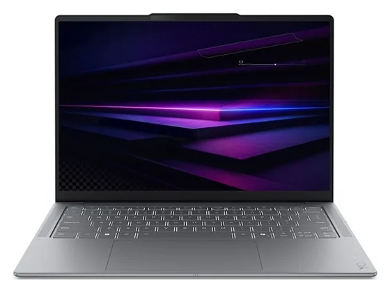
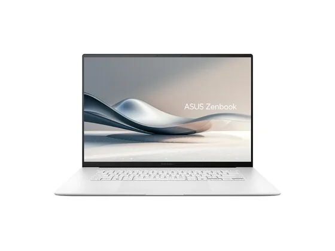
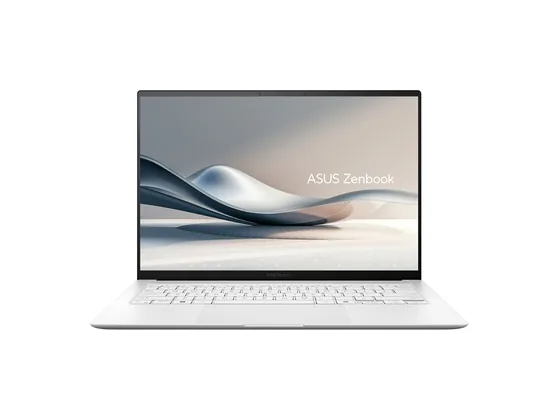
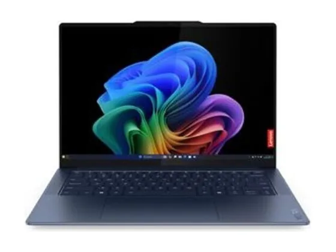

Lenovo Yoga Slim 7 14 : avis, tests et prix
Le verdict en une phrase. Châssis léger, écran OLED bien calibré, grande autonomie et connectique complète : aucun vrai point faible, et un prix redevenu raisonnable.
Notre choix dans le top 10 PC portables polyvalent.

Pour qui ?
Vous voulez un seul PC pour tout faire, léger, endurant, avec un écran OLED bien calibré.
Vous comptez jouer régulièrement à des jeux récents.
Le consensus de la presse
Sur 18 notes, 17 atteignent ou dépassent 8/10. La plus haute : 10,0/10 (IT Pro) ; la plus basse : 7,0/10 (India Today). Ces notes portent sur la gamme : configurations ou générations proches de celle vendue aujourd'hui. Dernier test relevé : août 2026.
Où l'acheter
La configuration peut différer d'un marchand à l'autre : vérifiez la fiche avant d'acheter. Seuls les liens Amazon sont affiliés à ce jour ; les autres sont de simples liens directs. Aucun n'influence les notes ni le classement.
Tous les tests recensés
Chaque ligne renvoie vers le test d'origine. Les notes sont converties sur 10 ; « test » signale un article sans note chiffrée. Notre méthode.
- IT Pro10,0
- TechPowerUp10,0
- Frandroid9,0
- Notebookcheck8,6
- Fortress Of Solitude8,5
- Notebookcheck8,5
- Notebookcheck8,5
- Notebookcheck8,4
- Notebookcheck8,4
- 01net8,0
- Chip.de8,0
- Engadget8,0
- Labo Fnac8,0
- Labo Fnac8,0
- RTINGS8,0
- Tom's Hardware8,0
- Windows Central8,0
- India Today7,0
- HardwareZonetest
- Trusted Reviewstest
Source du relevé : Synthèse CommentChoisir.
Les alternatives pour le même usage
Tout le top 10 →
Asus Zenbook S 16Un 16 pouces OLED 120 Hz de 1,5 kg : grand confort d'affichage et bonnes performances dans un châssis étonnamment fin. N° 3 · Le plus fin
Asus Zenbook S 14Très fin, très léger, silencieux et endurant : un ultraportable premium unanimement salué, avec un superbe écran OLED. N° 4 · Le meilleur PC Snapdragon
Lenovo Yoga Slim 7xÉcran OLED 3K superbe, finesse et autonomie : pour beaucoup de testeurs, le PC Snapdragon le plus abouti. Attention à la compatibilité de vos logiciels.Questions fréquentes
Que pense la presse de l'ordinateur Lenovo Yoga Slim 7 14 ?
La note presse moyenne est de 8,4/10, calculée sur 18 notes (de 7,0 à 10,0/10). Châssis léger, écran OLED bien calibré, grande autonomie et connectique complète : aucun vrai point faible, et un prix redevenu raisonnable.
Quels sont les points faibles relevés par les tests ?
Webcam moyenne ; Performances en jeu limitées.
À qui s'adresse le modèle Lenovo Yoga Slim 7 14 ?
Vous voulez un seul PC pour tout faire, léger, endurant, avec un écran OLED bien calibré. À éviter si : vous comptez jouer régulièrement à des jeux récents.
Où l'acheter, et à quel prix ?
Comptez environ 900 € (prix indicatif constaté en octobre 2026). Nous l'avons trouvé en vente chez Amazon et Darty. Les prix changent vite et la configuration peut différer d'un marchand à l'autre : seul le prix affiché par le marchand fait foi.